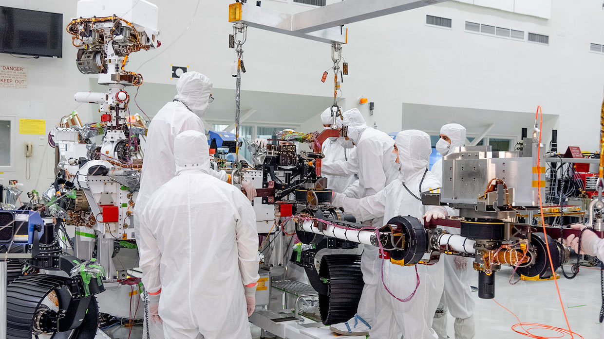

Last month, engineers at NASA’s Jet Propulsion Laboratory wrapped up the installation of the Mars 2020 rover’s 2.1-meter-long robot arm. This is the most powerful arm ever installed on a Mars rover. Even though the Mars 2020 rover shares much of its design with Curiosity, the new arm was redesigned to be able to do much more complex science, drilling into rocks to collect samples that can be stored for later recovery.
JPL is well known for developing robots that do amazing work in incredibly distant and hostile environments. The Opportunity Mars rover, to name just one example, had a 90-day planned mission but remained operational for 5,498 days in a robot unfriendly place full of dust and wild temperature swings where even the most basic maintenance or repair is utterly impossible. (Its twin rover, Spirit, operated for 2,269 days.)
To learn more about the process behind designing robotic systems that are capable of feats like these, we talked with Matt Robinson, one of the engineers who designed the Mars 2020 rover’s new robot arm.
Mars 2020 really steps it up when it comes to science. The most interesting new capability (besides serving as the base station for a highly experimental autonomous helicopter) is that the rover will be able to take surface samples of rock and soil, put them into tubes, seal the tubes up, and then cache the tubes on the surface for later retrieval (and potentially return to Earth for analysis). Collecting the samples is the job of a drill on the end of the robot arm that can be equipped with a variety of interchangeable bits, but the arm holds a number of other instruments as well. A “turret” can swap between the drill, a mineral identification sensor suite called SHERLOC, and an X-ray spectrometer and camera called PIXL. Fundamentally, most of Mars 2020’s science work is going to depend on the arm and the hardware that it carries, both in terms of close-up surface investigations and collecting samples for caching.